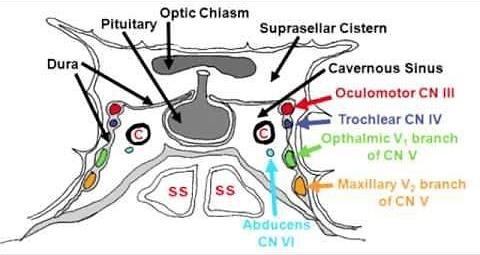

Part III · Vascular
Cavernous sinus thrombosis — anatomy
- The cavernous sinus is a wide venous channel which receives tributaries from the orbit, face, mouth, pharynx, paranasal sinuses, middle ear and subcutaneous tissue behind the ear.
- The sinus contains in its lateral wall the oculomotor and trochlear nerves, in addition to the ophthalmic and maxillary divisions of the trigeminal nerve.
- While the internal carotid artery and the abducent nerve run inside the sinus.
Why the eye is involved All ocular motor nerves except the abducent lie in the lateral wall, and the abducent runs within the sinus — hence ophthalmoplegia and proptosis.
